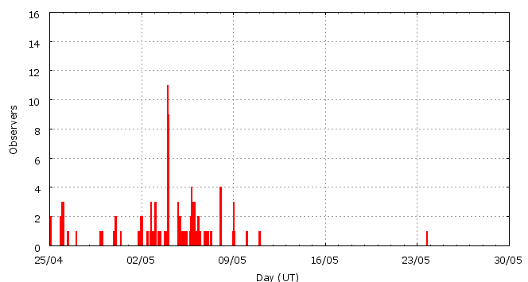

This page shows automated results of the Eta-Aquariids 2009, based on visual data entered through the IMO electronic report form. Note that these automated results may not be suitable for scientific use; please refer to manual analysis results published in journal papers (e.g., WGN) when available. Send your feedback regarding this page to Geert Barentsen.
Page generated: 2009 July 15 at 22:30 UT.
ZHRmax = 90 based on 342 Eta-Aquariids in 63 data intervals, assuming fixed population index r = 2.4 and zenith correction 1/sin(hR).

| Time (UT) | Solarlon | nINT | nETA | ZHR | |
|---|---|---|---|---|---|
| 2009-04-26 11:11 | 36.227 | 1 | 4 | 19 | ±8 |
| 2009-04-30 10:31 | 40.089 | 1 | 1 | 10 | ±7 |
| 2009-04-30 11:25 | 40.126 | 1 | 2 | 11 | ±6 |
| 2009-05-02 13:26 | 42.149 | 5 | 15 | 19 | ±5 |
| 2009-05-03 03:54 | 42.733 | 8 | 25 | 23 | ±5 |
| 2009-05-03 18:48 | 43.335 | 2 | 27 | 35 | ±7 |
| 2009-05-04 07:49 | 43.861 | 6 | 32 | 41 | ±7 |
| 2009-05-05 03:25 | 44.652 | 2 | 30 | 62 | ±11 |
| 2009-05-05 10:04 | 44.920 | 3 | 21 | 30 | ±6 |
| 2009-05-05 18:37 | 45.265 | 10 | 56 | 51 | ±7 |
| 2009-05-06 00:12 | 45.491 | 6 | 31 | 34 | ±6 |
| 2009-05-06 07:50 | 45.798 | 4 | 23 | 90 | ±18 |
| 2009-05-06 10:33 | 45.908 | 4 | 20 | 39 | ±9 |
| 2009-05-06 18:55 | 46.245 | 2 | 26 | 53 | ±10 |
| 2009-05-07 04:34 | 46.634 | 4 | 18 | 32 | ±7 |
| 2009-05-08 01:55 | 47.494 | 3 | 11 | 26 | ±8 |
| 2009-05-23 18:24 | 62.618 | 1 | 0 | 13 | ±13 |
For each estimation interval: time is the middle of the interval, nINT is the number of observing periods and nETA is the number of Eta-Aquariids involved. ZHR = (1 + sum nETA) / sum(Teff/C) where Teff is the effective observing time and C is the total correction for limiting magnitude, clouds and zenith correction. The solar longitudes refer to equinox J2000.0.
Data has been received from 42 observers in 16 countries. Thank you for your efforts!

| Observer | Country | Teff | nETA |
|---|---|---|---|
| Salvador Aguirre | Mexico | 11.60h | 62 |
| Alexandre Amorim | Brazil | 8.89h | 46 |
| Adam Avramov | Bulgaria | 0.68h | 2 |
| Simiao Cheng | China | 1.15h | 3 |
| Filip Colakovic | Serbia | 2.00h | 4 |
| Paul Craft | Australia | 2.18h | 53 |
| Mayuresh Desai | India | 5.75h | 28 |
| Shishir Deshmukh | India | 1.08h | 8 |
| Sietse Dijkstra | Netherlands | 1.92h | 2 |
| Todor Dimitrov | Bulgaria | 1.71h | 4 |
| Atharva Dixit | India | 1.00h | 3 |
| Gadi Eidelheit | Israel | 1.17h | 3 |
| Plamena Enikova | Bulgaria | 1.25h | 2 |
| Christoph Gerber | Germany | 1.58h | 0 |
| Sylvie Gorkova | Czech Republic | 3.00h | 2 |
| Vilem Heblik | Czech Republic | 1.25h | 2 |
| Gabriel Hickel | Brazil | 1.00h | 24 |
| Yandong Hu | China | 1.00h | 17 |
| Carl Johannink | Netherlands | 2.29h | 0 |
| Visnja Jovanovic | Serbia | 2.00h | 3 |
| Stanislav Korotkiy | Russia | 1.00h | 4 |
| Jakub Koukal | Czech Republic | 22.00h | 39 |
| Peter Van Leuteren | Netherlands | 2.49h | 1 |
| Anna S. Levina | Israel | 1.17h | 4 |
| Minghui Liang | China | 0.75h | 3 |
| Jer Nan Lou | Taiwan | 0.13h | 1 |
| Qiang Ma | China | 0.50h | 2 |
| Adam Marsh | Australia | 3.00h | 43 |
| Grigoris Maravelias | Greece | 1.00h | 5 |
| Koen Miskotte | Netherlands | 2.22h | 0 |
| Momchil Molnar | Bulgaria | 1.13h | 3 |
| Richard Pollard | Australia | 0.50h | 0 |
| Ella Ratz | Israel | 1.33h | 4 |
| Jurgen Rendtel | Germany | 2.35h | 1 |
| Branislav Savic | Serbia | 1.68h | 5 |
| Rohan Shewale | India | 4.50h | 16 |
| Rafael Ruben Torregrosa Soler | Spain | 0.80h | 0 |
| Daniela Urumova | Bulgaria | 1.52h | 3 |
| Valentin Velkov | Bulgaria | 2.15h | 3 |
| Yulia Yancheva | Bulgaria | 1.13h | 5 |
| Quanzhi Ye | China | 0.98h | 4 |
| Weihou Zeng | China | 2.22h | 2 |
Create your own analysis!
Rate intervals: eta2009_rate.csv (CSV-format).
Magnitude distributions: eta2009_magn.csv (CSV-format).